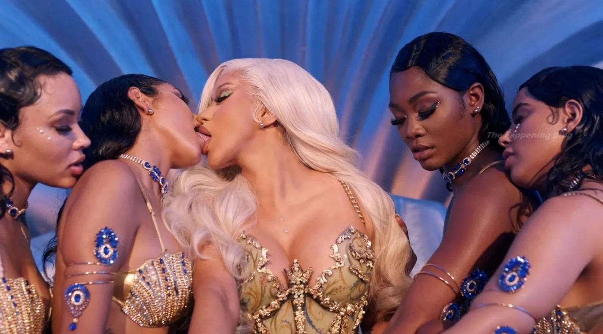

Is Female Rap Crticism True?
- 
Fresh off the heels of hit single "WAP," Cardi B releases another NSFW music video for "UP" single. This one features her tongue kissing multiple females to go along with the usual stripper outfits. For decades, men's songs have been heavily criticized for sexual themes and violence. Now, female rap is taking off and facing criticism of its own. Many hip hop fans have suggested that the genre is lacking in creativity and relies on sex to sell every song. Such criticism is usually met with backlash and claims of sexism.
Many female rappers are now promoting being bisexual (Megan, Kehlani, Cardi), and it seems that the genre has moved far away from lyrical content of femcees in the past (Luaryn Hill, Missy Elliott, Queen Latifah), and has taken a heavily sexualized approach.